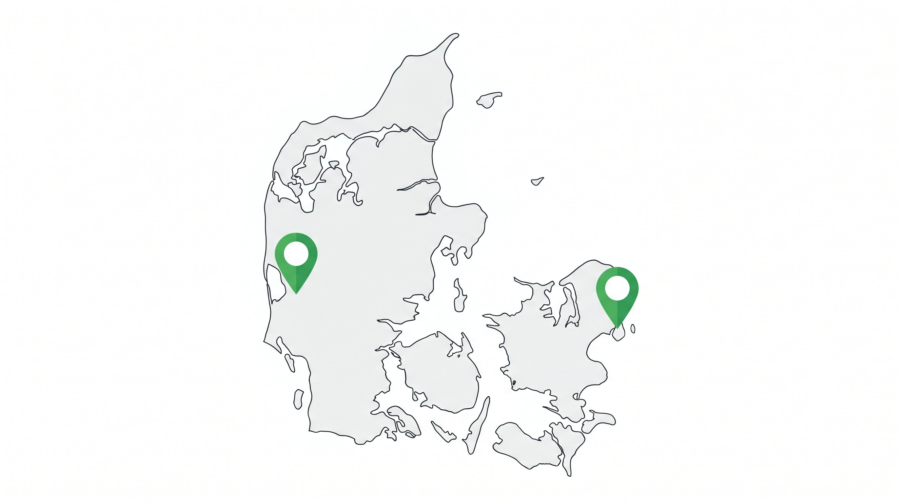

To lagerlokationer lyder som et vaekstsignal. Men det er også en kilde til kompleksitet, dobbeltomkostninger og logistiske hovedpiner, hvis det gøres forkert eller for tidligt.
De webshops der drager fordel af to lagerlokationer har typisk en klar geografisk grund til det og systemer der kan haandtere kompleksiteten. De der ikke har, betaler for ekstra overhead uden at faa den forventede gevinst.
Her er en afrlig vurdering af hvornår det giver mening, og hvornår du bor vente.
👉 SmartPack understotter multi-lokations lagerstyring med samlet overblik over begge lokationer. Se hvordan det virker
De tre grunde der legitimerer to lagerlokationer
Der er primaert tre situationer hvor to lagerlokationer giver reel bundlinjefordel:
- International ekspansion. Sender du et markant volumen til et andet nordisk land eller til Tyskland, kan et lokalt lager reducere fragttid og -pris markant. 500+ ordrer til Sverige om maaneden kan justificere et svensk lager.
- Geografisk koncentrerede kundesegmenter i Danmark. Hvis 40% af dine kunder er i Kobenhavn og 40% er i Jylland, kan to lagre reducere den gennemsnitlige fragttid med 12-24 timer.
- Beredskab og risikospredning. Et sekundaert lager som beredskabsløsning hvis det primaere lager er utilgaengeligt (brand, oversvommelse, leverandoerproblem).
Hvad der taler imod (endnu)
To lagerlokationer fordobler ikke blot din husleje. Det oger kompleksiteten på næsten alle omraader:
- Dobbelt lagerbeholdning. Du skal have sikkerhedsbestand begge steder, hvilket binder ekstra kapital.
- Ordrerouting-logik. Hvilken lokation sender til hvilken kundeadresse? Hvad sker der hvis lokation A er udsolgt?
- Personale og ledelse. To lokationer kræver to teams eller en opdeelt ledelsesstruktur.
- WMS-kompleksitet. Dit system skal kunne haandtere begge lokationer i realtid med korrekt lagerbeholdning.
Tommelfingerreglen
I Danmark holder tommelfingerreglen at eet lager er tilstrækkeligt op til 3.000-5.000 ordrer om maaneden, forudsat god geografisk placering (Trekantomraadet eller København giver god landsdækning) og samarbejde med en fragtleverandoer med et taet depotnetvaerk.
Over dette niveau, eller ved klar international ekspansion, begynder to lagerlokationer at give bundlinjefordel.